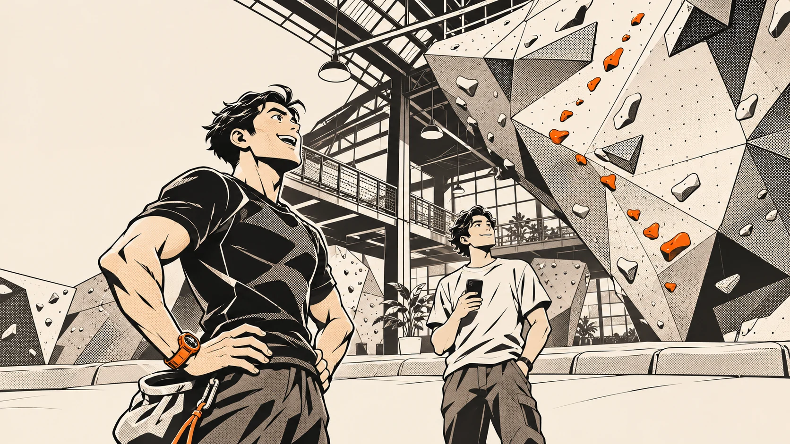

VENUE CLIMBING / KUNJUNGAN PERTAMA01 — 04
SEMUA BERAWAL DARI COBA-COBA.
SATU
PEGANGAN
LAGI.
Kerjaan besok masih ada.
Tapi jalur ini belum selesai.
INI CERITA
MILIKMU.
MINGGU 01 / 04SATU MINGGU. SATU PILIHAN.
MINGGU INI, MAU APA?
“GUE REKAM,
YA?”
“Gue rekam terus posting di sosmed sambil tag lo, ya? Sekalian nanti lo bisa lihat gerakan lo sendiri.”